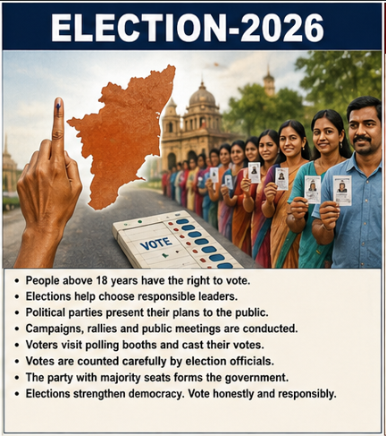
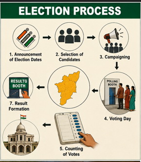
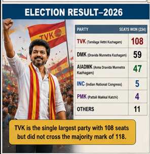

TN Election
The Tamil Nadu Election 2026 represents the voice of the people and the strength of democracy. Citizens participate in the voting process to select leaders who will guide the future development of the state.
The Tamil Nadu Election 2026 represents the voice of the people and the strength of democracy. Citizens participate in the voting process to select leaders who will guide the future development of the state.
The election process in Tamil Nadu is an organized democratic procedure conducted under the supervision of the Election Commission of India. The process begins with the official announcement of election dates for the Legislative Assembly. This announcement includes important details such as nomination dates, polling dates, and result declaration schedules. Once the election dates are announced, political parties begin preparing their campaign strategies and selecting candidates for different constituencies. Election officials also start making arrangements for polling booths, voter lists, and security measures. The Election Commission ensures that all parties follow election rules and regulations properly. Strict guidelines are implemented to maintain fairness and transparency throughout the election process. This organized system helps strengthen democracy and public trust. After the election schedule is announced, political parties select candidates to contest from different constituencies. Candidates are usually chosen based on their political experience, popularity, public support, and contribution to the party. Once selected, candidates file their nomination papers before election authorities within the specified deadline. Election officials carefully verify the submitted documents and eligibility criteria of all candidates. Candidates whose nominations are accepted officially become part of the election contest. Political parties then finalize their campaign plans and begin public outreach activities across the state. Supporters and party workers actively participate in promoting their candidates. This stage is considered very important because it determines the main competitors in each constituency. Campaigning is one of the most active phases of the election process. Political parties conduct rallies, roadshows, public meetings, television advertisements, and social media campaigns to attract voters. Leaders travel across cities, towns, and villages to explain their party’s promises and future development plans. Election manifestos are released by parties to present their welfare schemes and policies for the public. Campaign speeches mainly focus on employment, education, infrastructure, agriculture, healthcare, women’s welfare, and economic growth. Political parties also criticize opponents and compare governance records during campaigns. Supporters actively distribute pamphlets, posters, and banners to increase public awareness. Campaigning continues until the official campaign deadline fixed by the Election Commission. Media plays a major role during the election process. Television channels, newspapers, online platforms, and social media provide constant updates regarding campaigns and political developments. Public debates and interviews help voters understand the views and policies of different political parties. Social media has become an important tool for political communication, especially among younger voters. Political leaders use online platforms to connect directly with citizens and share campaign messages. Election surveys and opinion polls are also discussed widely during this period. However, the Election Commission monitors media activities carefully to prevent false information and maintain fairness. Media awareness helps citizens make informed voting decisions. Polling day is one of the most significant stages of the election process. On election day, voters visit polling booths established in schools, community halls, and government buildings. Election officials verify voter identity using voter ID cards and other approved documents. After verification, voters are allowed to cast their votes using Electronic Voting Machines (EVMs). Security personnel are deployed at polling stations to ensure peaceful and safe voting. Special facilities are provided for senior citizens and differently-abled people to help them vote comfortably. Election observers monitor polling booths to prevent malpractice and maintain transparency. High voter turnout is seen as a positive sign of democratic participation. After voting is completed, all EVM machines are securely sealed and transported to counting centers under police protection. Counting day is conducted under strict supervision by election officials and observers. Representatives from political parties are allowed to monitor the counting process to ensure transparency. Votes from each constituency are counted carefully round by round. Television channels and online media provide live updates regarding leads and results throughout the day. Supporters of political parties gather at party offices and counting centers to celebrate victories or wait anxiously for outcomes. Winning candidates are officially declared after the completion of counting. This stage determines the final political composition of the Legislative Assembly. Once all results are announced, the party or alliance that secures the majority of seats gets the opportunity to form the government. In Tamil Nadu, a party must cross the majority mark in the 234-member Assembly to form the government independently. If no party secures enough seats, alliance discussions and negotiations may take place. The Governor then invites the majority party or alliance to form the government. The elected Chief Minister takes the oath of office along with ministers in the new cabinet. The government then begins implementing its policies and election promises. This process ensures peaceful transfer of power through democratic methods. It reflects the importance of constitutional governance in India. Overall, the election process in Tamil Nadu represents the strength of democracy and public participation. Every stage, from candidate selection to government formation, follows constitutional rules and procedures. The Election Commission plays a major role in ensuring free and fair elections across the state. Citizens participate actively by voting responsibly and supporting democratic values. Political parties compete peacefully through campaigns and public discussions. Media and election officials help maintain transparency and awareness during the process. The successful completion of elections strengthens trust in democratic institutions. Therefore, elections remain an essential foundation of India’s political system.

The election process in Tamil Nadu is an organized democratic procedure conducted under the supervision of the Election Commission of India. The process begins with the official announcement of election dates for the Legislative Assembly. This announcement includes important details such as nomination dates, polling dates, and result declaration schedules. Once the election dates are announced, political parties begin preparing their campaign strategies and selecting candidates for different constituencies. Election officials also start making arrangements for polling booths, voter lists, and security measures. The Election Commission ensures that all parties follow election rules and regulations properly. Strict guidelines are implemented to maintain fairness and transparency throughout the election process. This organized system helps strengthen democracy and public trust. After the election schedule is announced, political parties select candidates to contest from different constituencies. Candidates are usually chosen based on their political experience, popularity, public support, and contribution to the party. Once selected, candidates file their nomination papers before election authorities within the specified deadline. Election officials carefully verify the submitted documents and eligibility criteria of all candidates. Candidates whose nominations are accepted officially become part of the election contest. Political parties then finalize their campaign plans and begin public outreach activities across the state. Supporters and party workers actively participate in promoting their candidates. This stage is considered very important because it determines the main competitors in each constituency. Campaigning is one of the most active phases of the election process. Political parties conduct rallies, roadshows, public meetings, television advertisements, and social media campaigns to attract voters. Leaders travel across cities, towns, and villages to explain their party’s promises and future development plans. Election manifestos are released by parties to present their welfare schemes and policies for the public. Campaign speeches mainly focus on employment, education, infrastructure, agriculture, healthcare, women’s welfare, and economic growth. Political parties also criticize opponents and compare governance records during campaigns. Supporters actively distribute pamphlets, posters, and banners to increase public awareness. Campaigning continues until the official campaign deadline fixed by the Election Commission. Media plays a major role during the election process. Television channels, newspapers, online platforms, and social media provide constant updates regarding campaigns and political developments. Public debates and interviews help voters understand the views and policies of different political parties. Social media has become an important tool for political communication, especially among younger voters. Political leaders use online platforms to connect directly with citizens and share campaign messages. Election surveys and opinion polls are also discussed widely during this period. However, the Election Commission monitors media activities carefully to prevent false information and maintain fairness. Media awareness helps citizens make informed voting decisions. Polling day is one of the most significant stages of the election process. On election day, voters visit polling booths established in schools, community halls, and government buildings. Election officials verify voter identity using voter ID cards and other approved documents. After verification, voters are allowed to cast their votes using Electronic Voting Machines (EVMs). Security personnel are deployed at polling stations to ensure peaceful and safe voting. Special facilities are provided for senior citizens and differently-abled people to help them vote comfortably. Election observers monitor polling booths to prevent malpractice and maintain transparency. High voter turnout is seen as a positive sign of democratic participation. After voting is completed, all EVM machines are securely sealed and transported to counting centers under police protection. Counting day is conducted under strict supervision by election officials and observers. Representatives from political parties are allowed to monitor the counting process to ensure transparency. Votes from each constituency are counted carefully round by round. Television channels and online media provide live updates regarding leads and results throughout the day. Supporters of political parties gather at party offices and counting centers to celebrate victories or wait anxiously for outcomes. Winning candidates are officially declared after the completion of counting. This stage determines the final political composition of the Legislative Assembly. Once all results are announced, the party or alliance that secures the majority of seats gets the opportunity to form the government. In Tamil Nadu, a party must cross the majority mark in the 234-member Assembly to form the government independently. If no party secures enough seats, alliance discussions and negotiations may take place. The Governor then invites the majority party or alliance to form the government. The elected Chief Minister takes the oath of office along with ministers in the new cabinet. The government then begins implementing its policies and election promises. This process ensures peaceful transfer of power through democratic methods. It reflects the importance of constitutional governance in India. Overall, the election process in Tamil Nadu represents the strength of democracy and public participation. Every stage, from candidate selection to government formation, follows constitutional rules and procedures. The Election Commission plays a major role in ensuring free and fair elections across the state. Citizens participate actively by voting responsibly and supporting democratic values. Political parties compete peacefully through campaigns and public discussions. Media and election officials help maintain transparency and awareness during the process. The successful completion of elections strengthens trust in democratic institutions. Therefore, elections remain an essential foundation of India’s political system.

The 2026 Tamil Nadu Assembly Election produced a dramatic and historic political outcome in the state. The election witnessed intense competition among several major political parties and alliances. After the completion of vote counting, actor-turned-politician Vijay’s party, Tamilaga Vettri Kazhagam (TVK), emerged as the single largest party in the Assembly. TVK secured 108 seats in the 234-member Legislative Assembly, creating a major political shift in Tamil Nadu politics. The results surprised many political analysts because TVK was a relatively new political party compared to established regional parties. Large celebrations took place among TVK supporters across the state after the announcement of results. The election result reflected the growing support for Vijay among youth and first-time voters. It also indicated a strong public desire for political change. Dravida Munnetra Kazhagam (DMK), led by M.K. Stalin, won 59 seats in the election. Although the party remained one of the major political forces in Tamil Nadu, the result was lower than expected for many supporters. DMK had campaigned strongly on governance experience, welfare schemes, and development programs introduced during its previous administration. The party maintained support in several urban and rural constituencies despite facing anti-incumbency challenges. Stalin addressed party workers after the results and assured them that DMK would continue to work for the people of Tamil Nadu. Political experts observed that the rise of TVK affected the traditional voter base of several parties, including DMK. However, the party still retained a strong organizational structure and opposition presence in the Assembly. DMK continued to remain an important political force in the state. AIADMK, led by Edappadi K. Palaniswami, secured 47 seats in the Assembly election. The party attempted to regain political strength through extensive campaigns and alliance strategies during the election. AIADMK focused on governance experience, rural welfare, and public welfare schemes introduced in previous years. Although the party did not achieve victory, it performed strongly in several constituencies where it retained loyal voter support. Party leaders expressed confidence that AIADMK would continue to play an active role in Tamil Nadu politics. Supporters gathered in many regions to encourage party leadership after the election results. Political analysts stated that AIADMK remained a major competitor despite facing challenges from emerging political movements. The election result highlighted the changing dynamics of Tamil Nadu politics. Several smaller parties also managed to secure representation in the Assembly. The Indian National Congress won 5 seats and continued its alliance-based political role in the state. Pattali Makkal Katchi (PMK) secured 4 seats through targeted regional campaigning and voter support in specific constituencies. Other alliance and regional parties also contributed indirectly to the overall political balance in the Assembly. Although some parties failed to win large numbers of seats, they still influenced alliance discussions and government formation strategies. Political observers noted that coalition politics had become increasingly important in the 2026 election scenario. Smaller parties gained importance because their support could determine government stability. This created a highly competitive political environment after the results. One of the most important aspects of the election result was that no single party crossed the majority mark independently. In the 234-member Assembly, a party or alliance required at least 118 seats to form the government. Even though TVK became the largest party with 108 seats, it still needed additional support to achieve a majority. This situation led to intense alliance discussions and political negotiations across the state. Political parties began holding meetings to decide whether to support or oppose government formation efforts. The election result created uncertainty and excitement among the public regarding the future government. Media channels continuously discussed possible alliances and political strategies. The post-election period became highly active and politically sensitive. The rise of TVK was considered one of the biggest highlights of the election. Vijay’s popularity among young voters, urban communities, and first-time voters played a major role in the party’s success. TVK’s campaign focused heavily on anti-corruption measures, youth welfare, employment, and transparent governance. Public meetings conducted by Vijay attracted huge crowds throughout the campaign period. Many voters believed that TVK represented a fresh alternative to traditional political parties. Political experts described the election result as a turning point in Tamil Nadu politics because of the sudden rise of a new regional force. Supporters celebrated the result as a symbol of political transformation in the state. The election demonstrated the increasing influence of celebrity-driven politics in Tamil Nadu. The election result also triggered major reactions among political parties and supporters. TVK supporters celebrated with rallies, fireworks, and public gatherings across Tamil Nadu. DMK and AIADMK leaders held internal meetings to analyze the reasons behind their performance. Social media platforms became filled with discussions, debates, and public opinions regarding the election outcome. National political leaders also closely observed the developments because Tamil Nadu is considered politically significant in India. Business communities, investors, and public organizations showed interest in the formation of the next government and future policy direction. The election result increased political uncertainty temporarily until alliance discussions became clearer. Citizens eagerly waited for the next stage of government formation. Overall, the 2026 Tamil Nadu Assembly Election result created a historic political situation in the state. TVK emerged as the single largest party and challenged the dominance of traditional political forces. DMK and AIADMK continued to remain major political players despite reduced seat counts. Smaller parties gained importance due to the possibility of alliance-based government formation. The election reflected changing voter preferences and increased political competition in Tamil Nadu. Public participation and voter turnout remained strong throughout the election process. The results demonstrated the power of democracy and the importance of every vote. Therefore, the 2026 election became one of the most memorable political events in Tamil Nadu history.

The current political situation in Tamil Nadu is very tense and politically active after the 2026 election results. Several parties are involved in alliance discussions and government formation talks. Political leaders are conducting meetings and negotiations to secure enough support in the Assembly. Media coverage and public attention remain focused on the developments happening across the state. Tamilaga Vettri Kazhagam is trying to form the government with the support of alliance parties such as Congress, CPI, CPI(M), and VCK. Reports suggest that TVK has crossed the majority mark with alliance support and is close to forming the government under the leadership of Vijay. Supporters of the party are celebrating this development across different parts of Tamil Nadu. At the same time, Dravida Munnetra Kazhagam and All India Anna Dravida Munnetra Kazhagam are also holding important discussions to prevent TVK from gaining power. Political negotiations, alliance talks, and strategic meetings are taking place between senior leaders. This has increased political tension and uncertainty in the state. The Governor of Tamil Nadu is closely observing the political developments and verifying whether TVK has enough support to officially form the government. Once the majority support is confirmed, the Governor may invite the party to form the government. The current political environment shows how important alliances and public support are in democratic politics.